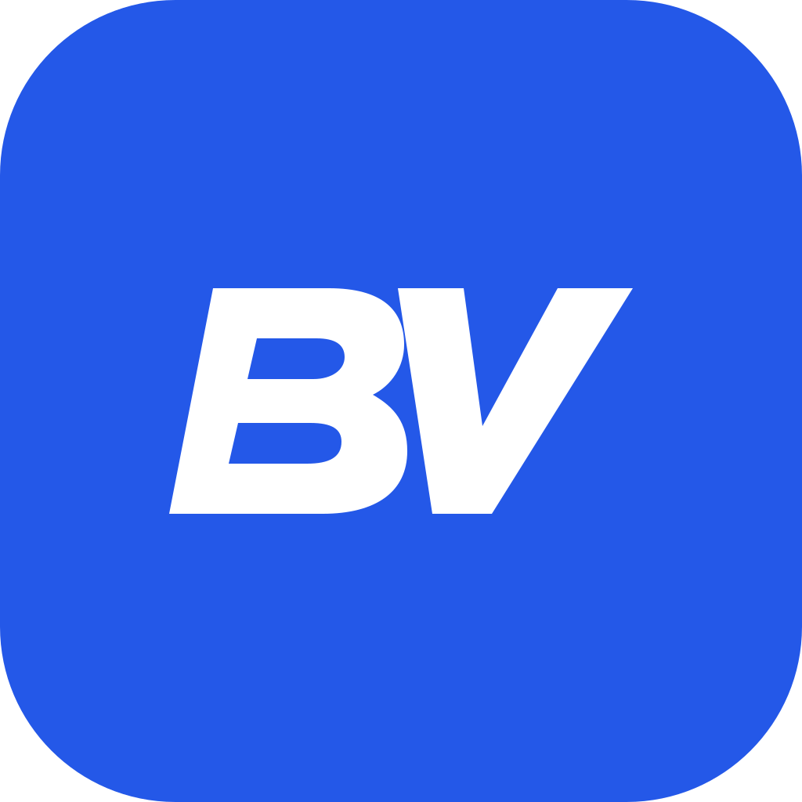

BetVerse · Club
Éléments vectoriels originaux. Cobalt, ivoire et bleu nuit. Aucune image ou police externe.
Clair

Sombre
Identité conçue pour des interfaces compactes et accessibles. Les documents et interfaces portent l’éditeur StarWhite Interactive.